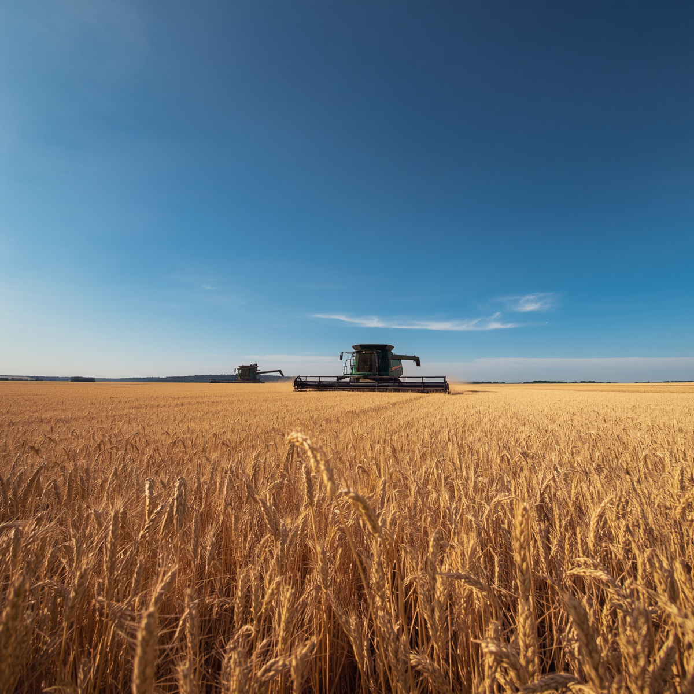

O Futuro do Campo
A agricultura brasileira vem se destacando mundialmente graças ao uso de tecnologias sustentáveis, Inteligência Artificial, automação agrícola e microrganismos que reduzem a dependência de fertilizantes químicos.



🌱 Sustentabilidade
Produção eficiente com menor impacto ambiental.
🤖 Inteligência Artificial
Análise de dados para decisões mais precisas.
🚜 Automação
Máquinas inteligentes aumentando a produtividade.
📡 Agricultura Digital
Sensores, drones e monitoramento em tempo real.
Benefícios da IA no Campo
Economia de água, fertilizantes e defensivos agrícolas.
Uso de drones e sensores para identificar problemas rapidamente.
Previsões climáticas e redução de perdas.
Máquinas autônomas realizam tarefas com alta precisão.
Uso inteligente dos recursos naturais.
Brasil e Inovação Agrícola
O reconhecimento internacional de pesquisadores brasileiros demonstra o potencial do país em liderar soluções agrícolas sustentáveis.
Venha conhecer melhor como a IA pode ser uma aliada do Campo.
Inscreva-se no nosso seminário on-line.